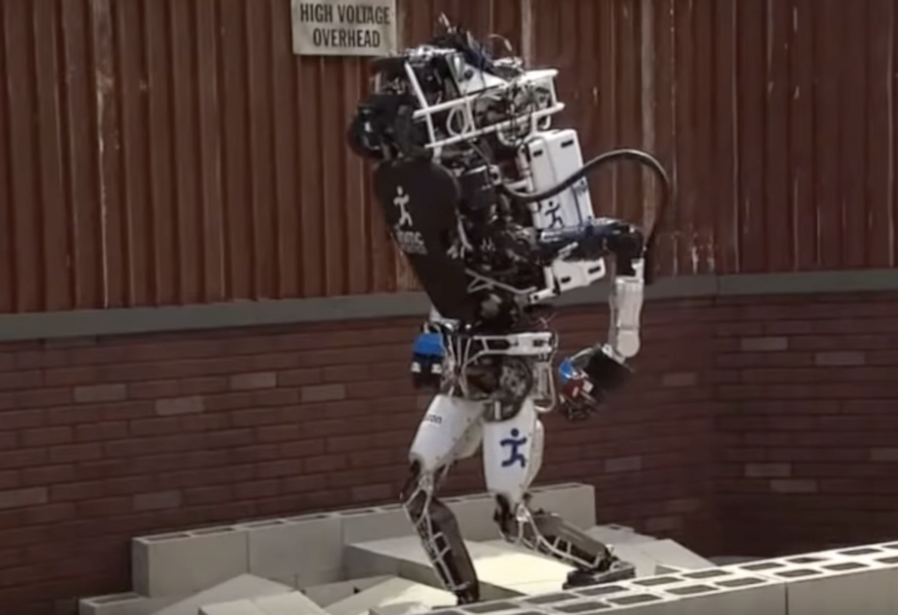
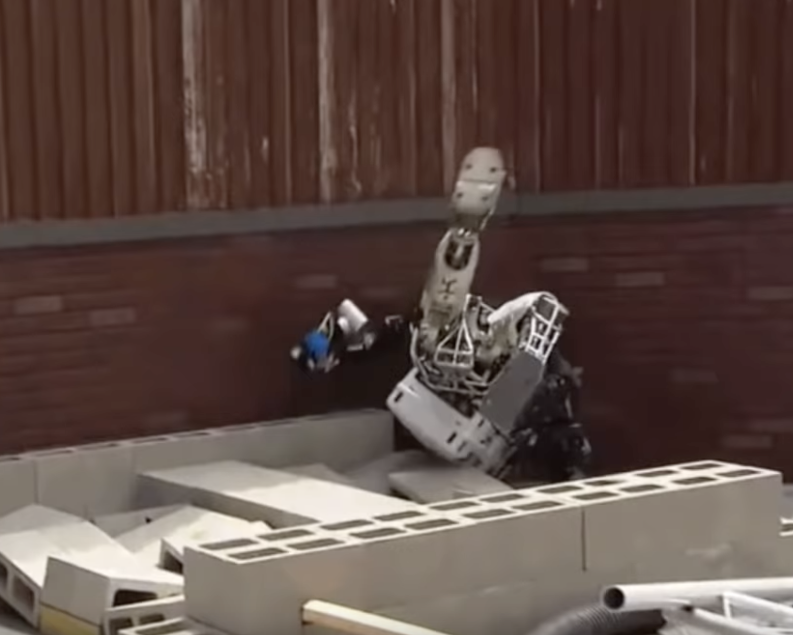

How Robust Are Transformers? Insights from three EMNLP 2021 Papers
25.01.22
|  |  |
Since their inception in 2017 by Vaswani et al. (2017), transformers have taken NLP (and recently also Computer Vision (Khan et al., 2021), and potentially soon Reinforcement Learning? Tang and Ha, 2021) by storm. On most benchmarks, they now outperform all RNN-based rivals by a large margin. Finetuning large transformer-based language models has become the de-facto standard for many NLP applications.
Nevertheless, the increase of the number of learnable parameters to hundreds of millions or even billions has not exactly made it easier to understand what is going on inside of these models. Therefore, there have been many attempts to develop techniques to understand what kind of knowledge is represented in transformers, for instance by probing for linguistic properties (Hupkes et al., 2018; Conneau et al., 2018; Voita and Titov, 2020; Hewitt and Manning, 2019). In this post, I want to take a look at another approach to this problem: By changing the input to the model in different ways, we can check if the model still behaves in the desired way and potentially uncover unexpected phenomena and failure modes. I do this based on three papers at this year’s EMNLP conference, that add misspellings and other modifications to words, swap the word order around or add entirely new kinds of text that are unfamiliar to the model.
But Why? One could ask why we even want to undertake such research – the models are performing well on our datasets, so why bother? There are several arguments for it: One is from the interpretability perspective – understanding what kind of features the model learns about the data, and if those align with what we want them to learn. The second one is from a linguistic or neuroscientific perspective: Do transformers display signs of human-like language processing? Are linguistic structures represented in transformers somehow? Lastly, the robustness and safety perspective: If we want to deploy Deep Learning models in situations where they could potentially create harm - be it recommending treatments for doctors and nurses, evaluating loan applications, and so forth - we want to make sure that small changes to an input that would not make a difference to human potentially flip the prediction of the model. Unfortunately, this can be a real problem, as the first paper will show.
How many heartts does an octopus have?
I bet yuo cna read thsi senntence. Or this this one. But is a transformer able to? This is exactly what Moradi and Samwald (2021) ventured out to test in their paper: Starting from character-level manipulations such as adding, deleting or swapping characters to repeating, swapping or doing the same with whole words, their palette of perturbations spanning many different operations. Especially interesting are also the ones about replacing words with synonyms, changing the verb tense or adding a negation to a sentence (in which case the corresponding label was changed appropriately). The experiments also feature a number of different tasks, such text or sentiment classification and question answering.
As you probably noticed in the beginning of this section, humans are quite robust to these changes - something that I notice every time I miss typos in a paper draft. The same unfortunately cannot be said about transformer models: Using a test bed of five different tasks and four different models (three of which are transformer-based), they find that adding these changes to the input can affect the performance of a model by ten, sometimes even twenty or more performance points! The authors try to explain some results by considering model architecture or training procedure: The LSTM-based ELMo (Peters et al., 2018) is character-based, and therefore quite robust to character-based changes. This can be corroborated with earlier studies on character-level LSTMs and noisy inputs by Heigold et al. (2018), showing how such failure modes might also be pathological to the usage of subword units. XLNet (Yang et al., 2019) is trained using an objective permuting the order of words, and thus wards off such challenges better. XLNet and BERT (Devlin et al., 2019) are trained on larger corpora, therefore handle synonym substitutions fairly well. Among all the results, I personally found the one using common misspellings of words the most surprising, as it seemed to have a more detrimental effect than modifying characters randomly. But even with all of these modifications, there are other ways to push transformers to their limits. So why don’t we try to just shuffle all words in a sentence and see how far we can get?
Order word matters for pre-training little
Moradi and Samwald (2021) had already considered changing the word order for their experiments, but Sinha et al. (2021) explore this scenario in more detail. They exploit different degrees of randomization, from resampling corpora with similar co-occurrence statistics as the original ones or shuffling n-grams in sentences. They train RoBERTa models (Liu et al., 2019) on the randomized data, and then finetune on established datasets such as GLUE (Wang et al., 2019) or the paraphrase detection task PAWS (Zhang et al., 2019). Surprisingly, the word order does not matter for some of the tested tasks, such as some natural language understanding or natural language inference tasks – where word order should actually matter quite a lot! However, this trend doesn’t – phew! – hold for all of the tested datasets. Using shuffled n-grams also leads to less detrimental drops in performance, as one might expected, since at least some local ordering is preserved.
The additional results stemming from probing for syntactic properties like Part-of-Speech and dependency parse information are also counter-intuitive: In many cases, probes reach decent accuracy, although the word order of input sentences is shuffled. The authors conclude that – while useful for many NLP tasks – transformers might succeed on many benchmarks by simply learning distributional information about the input. In these cases, the transformer becomes a very, very powerful bag-of-words model. Sinha et al. (2021) argue that there could potentially be a way for transformer to infer the most likely word order even from shuffled inputs – but the most likely word order won’t always be the one that matters!
This paper shows once more how differences in the training and test distribution of a model matter and can have surprising results. Distributional shift the two between is one possible reason for such a mismatch, and the main topic of the last paper.
That doesn’t look like anything to me
Distributional shifts are ubiquitous in Machine Learning applications – hospital populations change, newspapers report on new topics, consumer behavior changes with trends. Suddenly, we might be faced with a new data point the model has never seen before, and for which it potentially produce bad predictions. These inputs are usually called out-of-distribution (OOD). Can we catch them before disaster strikes?
This is the exactly the question that Arora et al. (2021) try to answer. There is a manifold of definitions of shift in the literature (Moreno-Torres et al., 2012), though the authors define two: The shift of features that correlated with the label (semantic shift) and those that don’t (background shift). Imagine a training set consisting of pictures of labradors and poodles in parks. When we show the models pictures of these breeds at home, the environment has changed, but that should not influence the prediction of the model. However, if we test the model on labradoodles, we suddenly encounter a semantic shift, and the predictions might be uncertain about how to classify this canine.
Using a neural discriminator (RoBERTa; Liu et al., 2019) and a density estimator (GPT-2; Radford et al., 2019), they check how models react to the mentioned shifts. They find that semantic shift is best detected by discriminators, and background shift is caught most effectively using density estimators. This makes sense, since for instance discriminators focus on features that are predictive of the task label. Nevertheless, Arora et al. (2021) note that this also makes them vulnerable to spurious correlations. They further identify smaller shifts or repetitive phrases (like repeated and true is true, skewing the likelihood of a phrase) as unsolved challenges for OOD detection in text. Also, note that this work was concerned with detection OOD sentences, while e.g. OOD words like such produced by Moradi and Samwald (2021) were not considered.
Conclusion
In this post, I briefly discussed different kinds and levels of modifications of the input data to transformers - from adding and deleting characters, swapping words and n-grams, to confronting models with text from other data distributions. What is the takeaway from all of these papers?
Transformers have a comparatively weak inductive bias for language, for example when compared to RNNs: If it wasn’t for positional encodings, they would be completely invariant to word order. And as neural networks in general, they tend to fit the most predictive features in the input - and produce brittle predictions in cases where human cognition acts very robustly (for instance on the famous adversarial examples). The fact that neural networks, despite the superficial inspiration from the human brain, process information very differently from humans, is already well-known (Lake et al., 2017; Van Schijndel and Linzen, 2018; Abnar et al., 2019), but is underlined by these results. However, Moradi and Samwald note: “our results seem to suggest that [...] we may not need human-like linguistic abilities for most NLP tasks”. And why that is most certainly true, there is a plethora of tasks for which this does not hold, such as natural language inference and paraphrase detection discussed in Sinha et al. (2021), which often require challenging inferences and world knowledge. Claiming that a model might posses certain capabilities based on the performance on some test set alone might thus be misleading at best, and have unintended, perhaps even dire consequences at worst in applications with end users unaware of such flaws.
The consequences from this are two-fold: More research on the robustness of neural network is necessary (and is in fact already an active area of research). Furthermore, as Moradi and Samwald also mention, such results motivate more challenging benchmarks or “unit tests” such as CheckList (Ribeiro et al., 2020). Otherwise, transformers specifically and NLP in general might remain at the Clever Hans stage: The eponymous horse, living in Germany around the end of the 19th century, was famous for being able to solve arithmetic problems. First hailed for its impressive mathematical abilities, an investigation later found the true reason: When tapping its hoof to spell out its answer, the audience would change their facial expressions and body language in anticipation right before the correct response, which the steed was able to pick up on. It relied on a spurious correlation.
tl;dr:
- Transformers are sensitive to perturbation of input words and characters, but for some tasks insensitive to a change in word order, implying they don’t learn about syntax but distributional information in the data.
- Different types of distributional shift require different architectures to detect them.
- Future works involves developing more challenging benchmarks and more robust architectures.
References
- Samira Abnar, Lisa Beinborn, Rochelle Choenni, and Willem H. Zuidema. Blackbox meets blackbox: Representational similarity & stability analysis of neural language models and brains. In Tal Linzen, Grzegorz Chrupala, Yonatan Belinkov, and Dieuwke Hupkes, editors, Proceedings of the 2019 ACL Workshop BlackboxNLP: Analyzing and Interpreting Neural Networks for NLP, BlackboxNLP@ACL 2019, Florence, Italy, August 1, 2019, pages 191–203. Association for Computational Linguistics, 2019.
- Udit Arora, William Huang, and He He. Types of out-of-distribution texts and how to detect them. In Marie-Francine Moens, Xuanjing Huang, Lucia Specia, and Scott Wen-tau Yih, editors, Proceedings of the 2021 Conference on Empirical Methods in Natural Language Processing, EMNLP 2021, Virtual Event / Punta Cana, Dominican Republic, 7-11 November, 2021, pages 10687–10701. Association for Computational Linguistics, 2021.
- Alexis Conneau, German Kruszewski, Guillaume Lample, Lo¨ıc Barrault, and Marco Baroni. What you can cram into a single \$&!#* vector: Probing sentence embeddings for linguistic properties. In Iryna Gurevych and Yusuke Miyao, editors, Proceedings of the 56th Annual Meeting of the As- sociation for Computational Linguistics, ACL 2018, Melbourne, Australia, July 15-20, 2018, Volume 1: Long Papers, pages 2126–2136. Association for Computational Linguistics, 2018.
- Jacob Devlin, Ming-Wei Chang, Kenton Lee, and Kristina Toutanova. BERT: pre-training of deep bidirectional transformers for language understanding. In Jill Burstein, Christy Doran, and Thamar Solorio, editors, Proceedings of the 2019 Conference of the North American Chapter of the Association for Computational Linguistics: Human Language Technologies, NAACL- HLT 2019, Minneapolis, MN, USA, June 2-7, 2019, Volume 1 (Long and Short Papers), pages 4171–4186. Association for Computational Linguistics, 2019.
- Georg Heigold, Stalin Varanasi, Gunter Neumann, and Josef van Genabith. How robust are character-based word embeddings in tagging and MT against wrod scramlbing or randdm nouse? In Colin Cherry and Graham Neubig, editors, Proceedings of the 13th Conference of the Association for Machine Translation in the Americas, AMTA 2018, Boston, MA, USA, March 17-21, 2018 - Volume 1: Research Papers, pages 68– 80. Association for Machine Translation in the Americas, 2018.
- John Hewitt and Christopher D. Manning. A structural probe for finding syn- tax in word representations. In Jill Burstein, Christy Doran, and Thamar Solorio, editors, Proceedings of the 2019 Conference of the North American Chapter of the Association for Computational Linguistics: Human Language Technologies, NAACL-HLT 2019, Minneapolis, MN, USA, June 2-7, 2019, Volume 1 (Long and Short Papers), pages 4129–4138. Association for Computational Linguistics, 2019.
- Dieuwke Hupkes, Sara Veldhoen, and Willem H. Zuidema. Visualisation and ’diagnostic classifiers’ reveal how recurrent and recursive neural networks process hierarchical structure. J. Artif. Intell. Res., 61:907–926, 2018.
- Salman Khan, Muzammal Naseer, Munawar Hayat, Syed Waqas Zamir, Fahad Shahbaz Khan, and Mubarak Shah. Transformers in vision: A survey. ArXiv preprint arXiv:2101.01169, 2021.
- Brenden M Lake, Tomer D Ullman, Joshua B Tenenbaum, and Samuel J Gershman. Building machines that learn and think like people. Behavioral and brain sciences, 40, 2017.
- Yinhan Liu, Myle Ott, Naman Goyal, Jingfei Du, Mandar Joshi, Danqi Chen, Omer Levy, Mike Lewis, Luke Zettlemoyer, and Veselin Stoyanov. Roberta: A robustly optimized bert pretraining approach. arXiv preprint arXiv:1907.11692, 2019.
- Milad Moradi and Matthias Samwald. Evaluating the robustness of neural language models to input perturbations. In Marie-Francine Moens, Xu- anjing Huang, Lucia Specia, and Scott Wen-tau Yih, editors, Proceedings of the 2021 Conference on Empirical Methods in Natural Language Pro- cessing, EMNLP 2021, Virtual Event / Punta Cana, Dominican Republic, 7-11 November, 2021, pages 1558–1570. Association for Computational Linguistics, 2021.
- Jose G Moreno-Torres, Troy Raeder, Roc´ıo Alaiz-Rodr´ıguez, Nitesh V Chawla, and Francisco Herrera. A unifying view on dataset shift in classification. Pattern recognition, 45(1):521–530, 2012.
- Matthew E. Peters, Mark Neumann, Mohit Iyyer, Matt Gardner, Christopher Clark, Kenton Lee, and Luke Zettlemoyer. Deep contextualized word rep- resentations. In Marilyn A. Walker, Heng Ji, and Amanda Stent, editors, Proceedings of the 2018 Conference of the North American Chapter of the Association for Computational Linguistics: Human Language Technolo- gies, NAACL-HLT 2018, New Orleans, Louisiana, USA, June 1-6, 2018, Volume 1 (Long Papers), pages 2227–2237. Association for Computational Linguistics, 2018.
- Alec Radford, Jeffrey Wu, Rewon Child, David Luan, Dario Amodei, Ilya Sutskever, et al. Language models are unsupervised multitask learners. OpenAI blog, 1(8):9, 2019.
- Marco Tulio Ribeiro, Tongshuang Wu, Carlos Guestrin, and Sameer Singh. Beyond accuracy: Behavioral testing of NLP models with checklist. In Dan Jurafsky, Joyce Chai, Natalie Schluter, and Joel R. Tetreault, editors, Proceedings of the 58th Annual Meeting of the Association for Computational Linguistics, ACL 2020, Online, July 5-10, 2020, pages 4902–4912. Association for Computational Linguistics, 2020.
- Koustuv Sinha, Robin Jia, Dieuwke Hupkes, Joelle Pineau, Adina Williams, and Douwe Kiela. Masked language modeling and the distributional hypothesis: Order word matters pre-training for little. In Marie-Francine Moens, Xuanjing Huang, Lucia Specia, and Scott Wen-tau Yih, editors, Proceedings of the 2021 Conference on Empirical Methods in Natural Language Processing, EMNLP 2021, Virtual Event / Punta Cana, Dominican Republic, 7-11 November, 2021, pages 2888–2913. Association for Computational Linguistics, 2021.
- Yujin Tang and David Ha. The sensory neuron as a transformer: Permutation-invariant neural networks for reinforcement learning. In Thirty-Fifth Conference on Neural Information Processing Systems, 2021.
- Marten Van Schijndel and Tal Linzen. Modeling garden path effects without explicit hierarchical syntax. In CogSci, 2018.
- Ashish Vaswani, Noam Shazeer, Niki Parmar, Jakob Uszkoreit, Llion Jones, Aidan N. Gomez, Lukasz Kaiser, and Illia Polosukhin. Attention is all you need. In Isabelle Guyon, Ulrike von Luxburg, Samy Bengio, Hanna M. Wallach, Rob Fergus, S. V. N. Vishwanathan, and Ro- man Garnett, editors, Advances in Neural Information Processing Systems 30: Annual Conference on Neural Information Processing Systems 2017, December 4-9, 2017, Long Beach, CA, USA, pages 5998– 6008, 2017.
- Elena Voita and Ivan Titov. Information-theoretic probing with minimum description length. In Bonnie Webber, Trevor Cohn, Yulan He, and Yang Liu, editors, Proceedings of the 2020 Conference on Empirical Methods in Natural Language Processing, EMNLP 2020, Online, November 16-20, 2020, pages 183–196. Association for Computational Linguistics, 2020.
- Alex Wang, Amanpreet Singh, Julian Michael, Felix Hill, Omer Levy, and Samuel R. Bowman. GLUE: A multi-task benchmark and analysis platform for natural language understanding. In 7th International Conference on Learning Representations, ICLR 2019, New Orleans, LA, USA, May 6-9, 2019. OpenReview.net, 2019.
- Zhilin Yang, Zihang Dai, Yiming Yang, Jaime Carbonell, Russ R Salakhutdinov, and Quoc V Le. Xlnet: Generalized autoregressive pretraining for language understanding. Advances in neural information processing systems, 32, 2019.
- Yuan Zhang, Jason Baldridge, and Luheng He. PAWS: paraphrase adversaries from word scrambling. In Jill Burstein, Christy Doran, and Thamar Solorio, editors, Proceedings of the 2019 Conference of the North American Chapter of the Association for Computational Linguistics: Human Language Technologies, NAACL-HLT 2019, Minneapolis, MN, USA, June 2-7, 2019, Volume 1 (Long and Short Papers), pages 1298–1308. Association for Computational Linguistics, 2019.